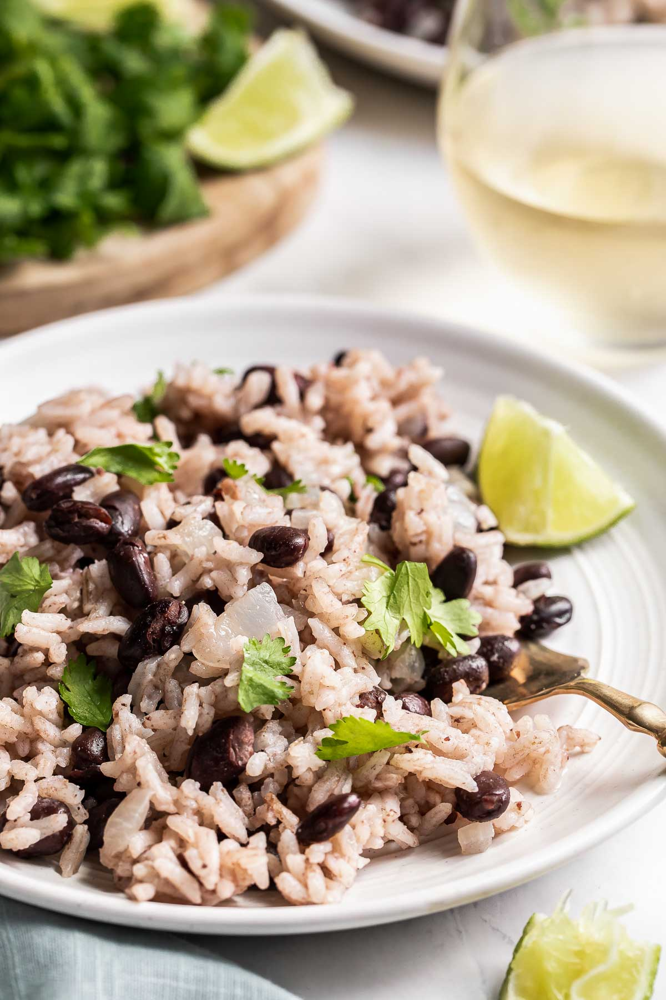

Beans and Rice Recipe

Description
Filling and nutritous!
Ingredients
- 1 tsp olive oil
- 1 onion
- 2 cloves garlice
- 3/4 cup uncooked white rice
- 1 1/2 cups vegetable broth
- 3 1/2 cups canned black beans
- 1 tsp cumin
- 1/2 tsp cayenne pepper
Steps
- Cook onion and garlic, stir in rice after cooked to coat
- Add vegetable broth and bring to a boil. Cover, and simmer about 20 minutes
- Stir in beans, cumin, cayenne and warm